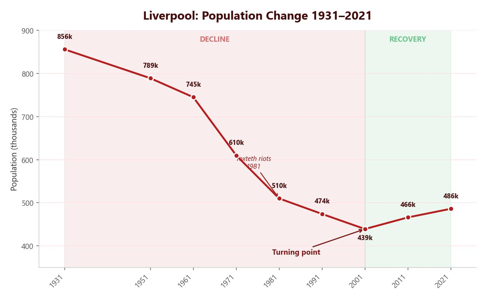

Migration into Liverpool
Liverpool’s position as a major trading port attracted waves of international migration over centuries. Each group brought its own culture, food, architecture and traditions, shaping Liverpool’s diverse character.
Irish Migration
Between 1846 and 1852, the Irish Potato Famine caused mass starvation. Around 1.3 million Irish people moved to Liverpool — the nearest major English port. By 1851, there were 90,000 Irish-born residents, making up roughly a quarter of the city’s population. Many settled in the Scotland Road area, where they formed tight-knit communities centred on the Catholic Church. The Irish also provided a huge workforce for building canals, roads and railways across the north of England. Today, up to 50% of Liverpool’s population is believed to have Irish ancestry. The Irish influence is visible in Catholic churches, Irish-themed pubs and the annual St Patrick’s Day parade.
Chinese Migration
Liverpool has the oldest Chinese community in Europe, dating from 1834 when immigrants arrived to work for the Blue Funnel shipping line (Alfred Holt and Company). They traded tea, cotton and silk from Shanghai. Settlers established Chinatown around Cleveland Square and Pitt Street. The community grew slowly but steadily, opening laundries, restaurants and import shops. Chinese New Year is now a major annual celebration drawing thousands of visitors, and the ornate Chinatown arch on Nelson Street — the largest outside China — is one of Liverpool’s most recognisable landmarks.
Afro-Caribbean Migration
Liverpool has the oldest Afro-Caribbean community in Europe. From the 1750s, migrants included sailors, freed enslaved people and students. Many settled in the Toxteth area, where they formed a vibrant community. Trade with Africa and the Caribbean continued to bring settlers through the 19th and 20th centuries. Liverpool’s connection to the transatlantic slave trade is acknowledged at the International Slavery Museum on the Albert Dock. Today, the Africa Oyé Festival — the UK’s largest free celebration of African and Caribbean music and culture — is held in Sefton Park each June, attracting tens of thousands of visitors.
Migration brought enormous benefits to Liverpool. The city developed a diverse food scene — Chinese, Caribbean and Indian restaurants sit alongside traditional chip shops. Annual festivals such as the St Patrick’s Day parade, Chinese New Year celebrations and the Africa Oyé music festival draw thousands of visitors each year. Distinctive architecture, including the ornate Chinatown arch on Nelson Street (the largest outside China) and grand Catholic churches built by Irish communities, gives the city a unique visual identity. Liverpool’s multicultural character is now a key part of its identity and a source of civic pride.
However, migration also created challenges. Rapid population growth put pressure on housing and local services such as schools and healthcare. In some areas, tensions arose between settled communities and new arrivals, particularly during periods of high unemployment when competition for jobs was fierce. The Toxteth riots of 1981, while driven by many factors, highlighted the frustrations felt by some communities who experienced discrimination and poverty.
On balance, migration has been overwhelmingly positive for Liverpool. The city’s cultural diversity is now celebrated as one of its greatest strengths, attracting tourists and investment. However, the pressures it placed on housing and services in the short term contributed to some of the social problems explored later in this lesson.
Why Did Liverpool Decline?
After the Second World War, Liverpool suffered massive job losses. The city was heavily bombed in 1941 — 2,500 people were killed in one week in May, and 70,000 became homeless. The Liverpool Overhead Railway (‘Dockers’ Umbrella’), which carried 18 million users a year at its peak, closed in 1956 because repair costs were too high.
Containerisation transformed shipping. Liverpool’s docks were too shallow for the larger container ships, so trade moved elsewhere. Mechanical handling replaced dock workers, causing massive unemployment.

Factory closures: As the docks declined, the factories that depended on them followed. The Tate & Lyle sugar works was one of the most notable closures — it had processed imported raw sugar for decades, but with fewer ships arriving there was not enough business to survive. Across the city, manufacturing jobs disappeared as one factory after another shut its doors.
The Dockers’ Umbrella: The Liverpool Overhead Railway, known locally as the ‘Dockers’ Umbrella’, ran along the waterfront for 10 kilometres and carried 18 million passengers per year at its peak. It was the first electric elevated railway in the world. However, it sustained heavy damage during the May Blitz of 1941, and by the 1950s the repair costs were too high to justify. The railway closed permanently in 1956 and was demolished — a powerful symbol of the city’s industrial decline.
Wartime destruction: During the May Blitz of 1941, over 10,000 homes were destroyed and 184 of Liverpool’s 257 dock berths were damaged or destroyed. Rebuilding was slow and expensive. The destruction of so much housing and infrastructure made the post-war decline even harder to reverse.
The negative multiplier effect took hold. As factories closed, people left the city. Buildings became derelict. Crime, fly-tipping and drug abuse increased. Investors were put off, so few new jobs were created. In the 1980s, unemployment exceeded 20% (double the national average), and around 12,000 people left the city each year.
The May Blitz
German bombing raids destroyed over 10,000 homes and damaged 184 of 257 dock berths. 2,500 people were killed in one week and 70,000 made homeless.
Overhead Railway closes
The Liverpool Overhead Railway (‘Dockers’ Umbrella’) closed permanently after wartime damage made repair costs too high. It was demolished shortly after.
Containerisation and dock closures
Liverpool’s shallow docks could not handle larger container ships. Trade moved to ports like Felixstowe. Thousands of dock workers lost their jobs.
Factory closures
Manufacturing collapsed. Tate & Lyle sugar works and other factories shut. By the 1980s, unemployment exceeded 20%.
Toxteth Riots
Nine days of rioting in the Toxteth area reflected deep frustrations over unemployment, poverty and racial discrimination. Over 450 police officers were injured.
Population exodus
Around 12,000 people left the city each year, seeking better opportunities elsewhere. Liverpool’s population fell from 850,000 (1931) towards 485,000.
Social Deprivation
As Liverpool’s economy collapsed, the social consequences were devastating. Deprivation affected almost every aspect of daily life in the city’s poorest neighbourhoods. Housing, education, health and community safety all deteriorated in a vicious cycle that was extremely difficult to break.
The Toxteth riots of July 1981 exposed the depth of Liverpool’s social crisis. Over nine days, residents clashed with police in violent street battles. The rioters were driven by unemployment, poverty, poor housing and frustration at racial discrimination. Over 450 police officers were injured and 500 people were arrested. The government sent Michael Heseltine to investigate, and his report recommended major investment in Liverpool’s most deprived areas — but real recovery would take decades.
Housing: With no income, families could not maintain their homes. Houses were abandoned and left derelict, attracting crime. Areas like Toxteth, Vauxhall and Everton suffered severe decline, with damp, mould and unsafe living conditions.
Education: With few job prospects, young people lacked aspiration. The government’s Youth Training Scheme (YTS) paid just £30 a week, and employers often exploited trainees for cheap labour without offering permanent jobs. Many young people turned to crime, and Liverpool earned the nickname ‘Smack City’ due to heroin dealing targeting the most deprived areas.
Outward migration: People who wanted a better life migrated away from Liverpool, seeking better jobs, education and housing elsewhere — particularly in the South of England. Liverpool’s population fell from a peak of 850,000 in 1931 to around 485,000 by 2016.
Health: In the most deprived areas, damp, mould and overcrowding led to serious respiratory problems such as asthma and bronchitis. Families in Toxteth, Vauxhall and Everton often lived in houses that had not been maintained for decades, with leaking roofs and broken windows. Poor nutrition and limited access to healthcare made these problems worse.
Waste disposal: As the council’s budget shrank, refuse collections in the poorest areas became less frequent. Fly-tipping increased dramatically — rubbish was dumped on derelict land and in alleyways. The waste attracted rats and other vermin, creating a further health hazard for residents already struggling with poor living conditions.
Liverpool’s population peaked at 850,000 in 1931 but fell to around 485,000 by 2016. In the 1980s, unemployment exceeded 20% and 12,000 people left the city each year.